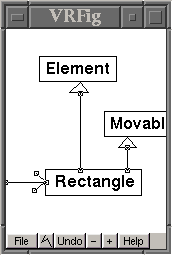

A vector graphics editor for PDA environment
Description | License | Status | Author | Download | Screenshots
VRFig is a simple tool for drawing figures. It has been developed for PDA use and especially for the Agenda Computing VR3 Linux PDA. The goal is to be able to plan things and sketch technical drawings on the road without always dragging a laptop computer around. The intended ultimate use could be sketching or browsing a software architecture diagram while sitting in a bus, for example. The biggest challenge is to overcome the inherent limitations of a PDA user interface.
Wouldn't it be easier to stick to pen and paper then? I don't believe myself that anything PDA based could come close to the usability of pen and paper (as long as we are talking about the palm sized PDAs). However, the one advantage VRFig has over pen and paper is that it is easier to import/export figures from/to desktop drawing programs. VRFig is not intended to be a stand-alone fully featured vector graphics editor but a kind of off-line terminal to a desktop drawing program.
VRFig, a vector graphics editor for PDA environment
Copyright 2001 Johannes Lehtinen
This program is free software; you can redistribute it and/or modify it under the terms of the GNU General Public License as published by the Free Software Foundation; either version 2 of the License, or (at your option) any later version.
Parts of the source code (file chooser to be exact) is strongly based on the ESP Widget Set 2.0 by Easy Software Products. It has been just modified to match the VR3 look and feel. This code can be found in the subdirectory 'src/espws'. More information about the ESP Widget Set and the original source code can be obtained at the URL http://www.easysw.com/~mike/espws/.
VRFig is currently under development. It is not yet ready for real intented use. These early releases are mostly targeted to other developers who are interested in participating the development process or who want to reuse VRFig source code. VRFig can be already used for drawing figures and it is able to save and load them but the set of drawing primitives is still rather limited. The user interface also needs work and the desktop side interface to desktop drawing programs (such as XFig) does not exist yet.
The VRFig was written and is being developed by Johannes Lehtinen < johannes.lehtinen@iki.fi >. If you would like to contribute, please see the corresponding section in the README file in distribution package.
To download the source code distribution select the package named vrfig-VERSION.tar.gz. If you don't want to compile the VRFig yourself then download the binary distribution vrfig-vr3-VERSION.tar.gz. The binary version is compiled for the Agenda VR3 Linux PDA and it is statically linked with the Expat XML parser library which makes it rather big. Let's hope that someday Expat will find its way to the standard VR3 distribution. Note: You can not execute the binary version on your desktop computer!
vrfig-0.1.tar.gz (116.0 kB)
vrfig-vr3-0.1.tar.gz (111.5 kB)
It is hard to understand the VRFig user interface by looking at the screenshots alone. For example, if you want to move an element (polyline, ellipse, rectangle) you select the move tool and then just "grab" the element on some line and move it to a new position. Anyway, here are the screenshots. The file chooser is based on ESP Widget Set by Easy Software Products. It is a totally separate piece of code so if you like it, it should be easy to use it in your program.

Description | License | Status | Author | Download Screenshots
Copyright 2001 Johannes Lehtinen
Last updated on 2001-05-23.